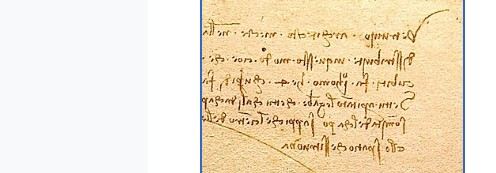

Imagine someone hands you Leonardo's notebook. You flip it open and nothing makes sense. The letters look like they come from an alien alphabet. That is because he wrote backwards: right to left, with every letter flipped, like a stamp before it is pressed into ink.
That is roughly what his pages look like. Put a mirror next to the screen and it reads normally.

Most of what he wrote in his private notebooks runs this way. Jean Paul Richter, the scholar who translated the notebooks into English, said it takes serious effort to read:
Richter, the translator
The handwriting is so peculiar that it requires considerable practice to read even a few detached phrases, much more to solve with any certainty the numerous difficulties of alternative readings, and to master the sense as a connected whole.
Richter even tried the obvious trick, holding a mirror up to the page. He found that it only works for a first quick look, and that using it all the time is too tiring to be practical. So how did people read this stuff? The hard way: lots of practice.
The earliest clue
The first person to describe Leonardo's writing was Giorgio Vasari, an artist who wrote one of the earliest biographies of Leonardo, about thirty years after Leonardo died. Vasari never met him, but he could talk to people who had. Richter quotes him:
Vasari, as quoted by Richter
he wrote backwards, in rude characters, and with the left hand, so that any one who is not practised in reading them, cannot understand them
Notice the words with the left hand. That points to a handy theory. If you are left-handed, writing left to right drags your hand through the wet ink. Writing right to left keeps your hand clear of it.
Two theories, one mystery
Here is the twist: as far as anyone has found, Leonardo never explained it himself. Not once, in thousands of pages that survive. And remember the diving machine from page 1, which he kept secret because of the evil nature of men? A notebook that is nearly impossible to read is about as private as a notebook can get.
So was it just the easiest way for a left-handed person to write quickly, or one more layer of secrecy? Both explanations fit everything we know. Leonardo never tells us which is true.
Words to know
- mirror writing
- writing that runs right to left with the letters reversed, so a mirror makes it readable
- peculiar
- strange or unusual
- left-handed
- someone whose left hand is the stronger writing hand
Try it
Optional. For after your session with Rocky, on your own time. Ask a grown-up before you use any website.
- Museum of Science, Boston: Mirror Writing. Write backwards signatures, use a mirror to read them, and send mirror messages to a partner.
- Write a short secret note to a friend in mirror writing. Time how long it takes each of you to read it.